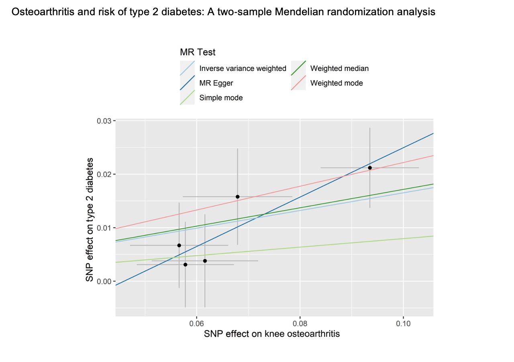

Xing Xing
About Me
I’m a ScM Student in Biostatistics at Johns Hopkins University. My research spans several areas, with a current focus on developing statistical models for meta-analysis. Under the guidance of Dr. Lifeng Lin, I am concentrating on meta-regression methods and addressing publication bias. Additionally, I have a keen interest in genetics, specifically in Mendelian randomization and TWAS analysis. My work also involves the epidemiologic analysis of musculoskeletal diseases, in collaboration with Dr. Guoqi Cai.
Outside of academia, I’m a dead hard fan of Juventus and Park Hyatt.
Research Interests
- Evidence-based medicine
- Publication Bias
- Mendelian Randomization
- Musculoskeletal Diseases
Publications
-
 arXivJournal of Diabetes, Jul. 2023.
-
 arXiv
Diabetic Medicine, Jul. 2023.
arXiv
Diabetic Medicine, Jul. 2023.
conference
- [Apr. 2024.] Predictive validity of machine learning vs a consensus-based MRI definition of osteoarthritis combined with radiographic osteoarthritis for the progression of cartilage loss, knee symptoms and total knee replacement has been presented on OARSI 2024.
Collaboration
-
[May. 2024] The global burden of lymphoma: estimates from the Global Burden of Disease 2019 study has been published by the Public Health.
-
[May. 2024] Socioeconomic status, individual behaviors and risk for Lymphomas: a Mendelian randomization study has been published by the Journal of Cancer.
-
[May. 2024] Association between air pollution and male sexual function: A nationwide observational study in China has been published by the Journal of Hazardous Materials.
-
[Feb. 2024] Clinicopathologic features and survival outcomes of CD30 expression in extranodal natural killer/T-cell lymphoma has been published by the American Journal of Clinical Pathology.
-
[Oct. 2023] Association of smoking with cartilage loss of knee osteoarthritis: data from two longitudinal cohorts has been published by BMC Musculoskeletal Disorders.
Services
Journal Reviewers
Research Synthesis Methods
Biochemical Genetics
Powered by Jekyll and Minimal Light theme.